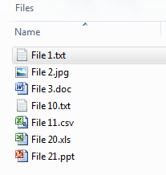
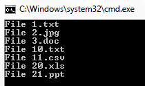

Ordinal String Sorting
Ordinal String Sorting
Have you ever desired to have in your code a way to order a sequence of strings in the same way as Windows does for files whose name contains a mix of letters and numbers? Ordinal string sorting is not natively supported in C# but can be easily implemented by specialising a string comparer and adding a few extensions to the enumerable string collection.
The ordinal order
Ordinal numbers are the words representing the rank of a number with respect to some order, in particular order or position (i.e. first, second, third, etc.).
As humans, we learn to put numbers in the correct order as a primary skill, according to their ordinality. We can also order strings containing letters and numbers very easily just by looking at the alphabetical order of letters and the ordinality of a number. For example, the string “Year 1” precedes “Year 2”, which also comes before “Year 10” in this natural order. Basically, we know how to separate the alphabetical part of the sentence from the numerical one, and then we are able to sort the full string by applying two different “sorting algorithms” (alphabetical and ordinal, respectively). Variations of these algorithms may apply in different cultures, but the principle is the same.
Computers, on the converse, use the ASCII table for sorting strings, from the dawn of the informatics era. This table presents a sequence of letters, numbers, punctuation and control characters in a fixed order that tends to mirror the natural order of the alphabet and numbers, and associates every entry in the table (a character) to a number. For example, number 65 corresponds to character “A”, “B” is 66, “C” is 67 and so on. Likewise, also characters 0 to 9 have an ASCII number: “0” is 48, “1” is 49 until “9”, which is 57. Numbers after 9 corresponds to two or more characters (10 is “1” and “0”).
Sorting characters according to the ASCII table, which is what computers do, basically implies sorting each character individually according to their position in the table: same “sorting algorithm” irrespective of the type of the character, whether letter, number, punctuation character or other.
By applying this logic, strings are compared character by character and then sorted according to the numerical position of the character in the ASCII table. The string “Year 1” would still be ordered before “Year 2”, as character “1” appears before “2” in the table. But “Year 10” is before “Year 2” because the “1” character in “10” is compared first with “2” and, again, “1” takes precedence over “2”, irrespective of the following characters.
Standard order in C#
Let’s make an example in C# of displaying a sequence of strings in the standard order supported by the OrderBy() LINQ extension to enumerable collections.
List<string> files = new List<string>()
{
"File 1.txt",
"File 2.jpg",
"File 3.doc",
"File 10.txt",
"File 11.csv",
"File 20.xls",
"File 21.ppt"
};
foreach (var file in files.OrderBy(λ => λ))
{
Console.WriteLine(file);
}
List<string> files = new List<string>() { "File 1.txt", "File 2.jpg", "File 3.doc", "File 10.txt", "File 11.csv", "File 20.xls", "File 21.ppt" }; foreach (var file in files.OrderBy(λ => λ)) { Console.WriteLine(file); }

Not the result we would like to have, and definitely not user-friendly. So, what can we do about it?
Ordinal order in C#
Sticking to the example of the file names, Windows already supports ordinal sorting of files by name, as in the following screenshot taken on Windows 7.

Much better, isn’t it? So Windows is clever enough to think like a human and understand the alphabetical and numerical part of a string separately. Can we do the same in C#?
The approach to take for introducing ordinal ordering of a collection of strings in C# starts from the implementation of an ordinal string comparer that contains the logic for understanding what is alphabetical and what is numerical within a string. After that, we will introduce a few extensions in the same style as LINQ does, for having a shortcut in an enumerable collection of strings to the ordinal sorting methods.
The OrdinalStringComparer class
We have seen in the previous example that the easiest way to sort a collection of strings is to use the LINQ extension OrderBy() on an enumerable object. The OrderBy() method has an overload that accepts an IComparer<TKey> for specifying a bespoke way of ordering objects of type TKey.
The signature of this overload is:
public static IOrderedEnumerable<TSource> OrderBy<TSource, TKey>( this IEnumerable<TSource> source, Func<TSource, TKey> keySelector, IComparer<TKey> comparer);
public static IOrderedEnumerable<TSource> OrderBy<TSource, TKey>( this IEnumerable<TSource> source, Func<TSource, TKey> keySelector, IComparer<TKey> comparer);
The key to perform custom comparisons of strings is to implement the IComparer interface, then. This interface exposes only one method, Compare, with the following signature:
int Compare(
T x,
T y
);
int Compare( T x, T y );
public class OrdinalStringComparer : IComparer<string>
{
private bool _ignoreCase = true;
public OrdinalStringComparer()
: this(true)
{
}
public OrdinalStringComparer(bool ignoreCase)
{
_ignoreCase = ignoreCase;
}
public int Compare(string x, string y)
{
// full implementation on the attached solution
}
}
public class OrdinalStringComparer : IComparer<string> { private bool _ignoreCase = true; public OrdinalStringComparer() : this(true) { } public OrdinalStringComparer(bool ignoreCase) { _ignoreCase = ignoreCase; } public int Compare(string x, string y) { // full implementation on the attached solution } }
The OrdinalStringComparer implements the IComparer<string> interface, and specifically its method Compare(), and also presents an overloaded constructor for discerning between a case-sensitive or insensitive comparison. Clever! J
Extensions
We can already use our OrdinalStringComparer when ordering a collection of strings via the OrderBy() extension; with reference to the list of file names presented at the beginning of this article, we can simply use the overload of the OrderBy() method that accepts an IComparer in input for obtaining the desired result:
foreach (var file in files.OrderBy(λ => λ, new OrdinalStringComparer()))
{
Console.WriteLine(file);
}
foreach (var file in files.OrderBy(λ => λ, new OrdinalStringComparer())) { Console.WriteLine(file); }

If we were to order the file names in descending order, we would use the OrderByDescending() extension with the explicit call to OrdinalStringComparer:
foreach (var file in files.OrderByDescending(λ => λ, new OrdinalStringComparer()))
{
Console.WriteLine(file);
}
foreach (var file in files.OrderByDescending(λ => λ, new OrdinalStringComparer())) { Console.WriteLine(file); }
· OrderByOrdinal
· OrderByOrdinalDescending
The signature for these extensions, and their overload for allowing case-sensitive sorting, is the following; remember that extension methods must be declared as public static in a static class:
public static class StringExtensions
{
public static IOrderedEnumerable<string> OrderByOrdinal(
this IEnumerable<string> strings,
Func<string, string> keySelector);
public static IOrderedEnumerable<string> OrderByOrdinal(
this IEnumerable<string> strings,
Func<string, string> keySelector,
bool ignoreCase);
public static IOrderedEnumerable<string> OrderByOrdinalDescending(
this IEnumerable<string> strings,
Func<string, string> keySelector);
public static IOrderedEnumerable<string> OrderByOrdinalDescending(
this IEnumerable<string> strings,
Func<string, string> keySelector,
bool ignoreCase);
}
public static class StringExtensions { public static IOrderedEnumerable<string> OrderByOrdinal( this IEnumerable<string> strings, Func<string, string> keySelector); public static IOrderedEnumerable<string> OrderByOrdinal( this IEnumerable<string> strings, Func<string, string> keySelector, bool ignoreCase); public static IOrderedEnumerable<string> OrderByOrdinalDescending( this IEnumerable<string> strings, Func<string, string> keySelector); public static IOrderedEnumerable<string> OrderByOrdinalDescending( this IEnumerable<string> strings, Func<string, string> keySelector, bool ignoreCase); }
Internally, each method invokes the OrderBy() and OrderByDescending() extensions accordingly, with an explicit call to the OrdinalStringComparer class, using the respective overload for ignoring case-sensitive comparison. So, in our file names example, sorting a list of strings by ordinal order would be as simple as:
foreach (var file in files.OrderByOrdinal(λ => λ))
{
Console.WriteLine(file);
}
foreach (var file in files.OrderByOrdinal(λ => λ)) { Console.WriteLine(file); }
Clever 2.0! J